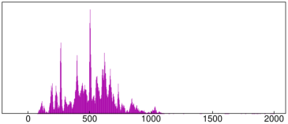
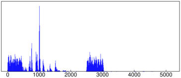

28.1.9 Trimming image margins
Margins of an image, consisting of “empty” pixels with value 0 in all color
channels, can be found and removed by using the trim
command (see Section 5.2.5, Section 21.2.2
and Section 28.2.2 for other usages of trim).
-
trim takes one mandatory argument and one or two optional arguments:
-
img, an image object.
- Optionally, inv, the symbol.
- Optionally, index, the symbol.
- trim(img ⟨,inv ⟩ ⟨,index ⟩)
finds largest zero-pixel margins in img or its inversion if inv is given.
If index is given, then the trimmed slice location (x,y) and dimensions (w,h) are
returned as a sequence (x,y,w,h). Otherwise, a trimmed version of img is returned.
- To remove white margins, include the option inv when calling trim.
Example
| img:=image("/home/luka/Downloads/mnist_png/training/1/552.png") |
|
| |
an image of size 28×28 (grayscale)
| | | | | | | | | | |
|

